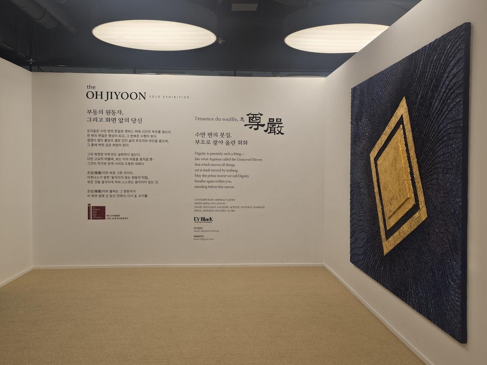
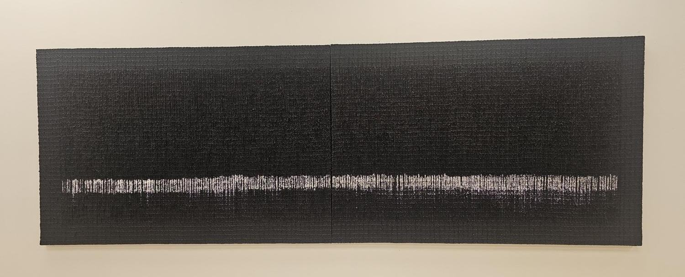
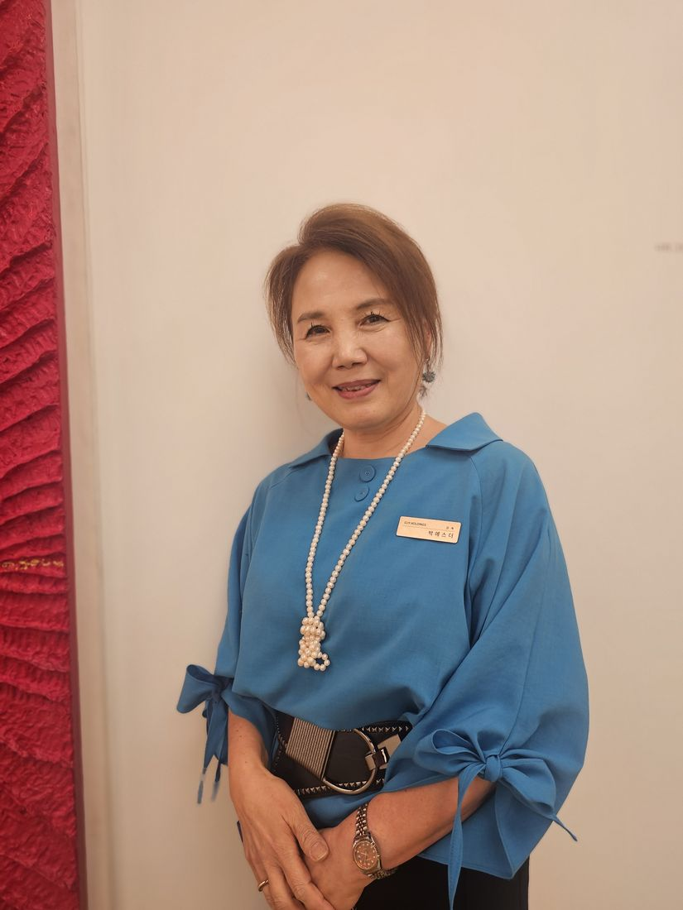
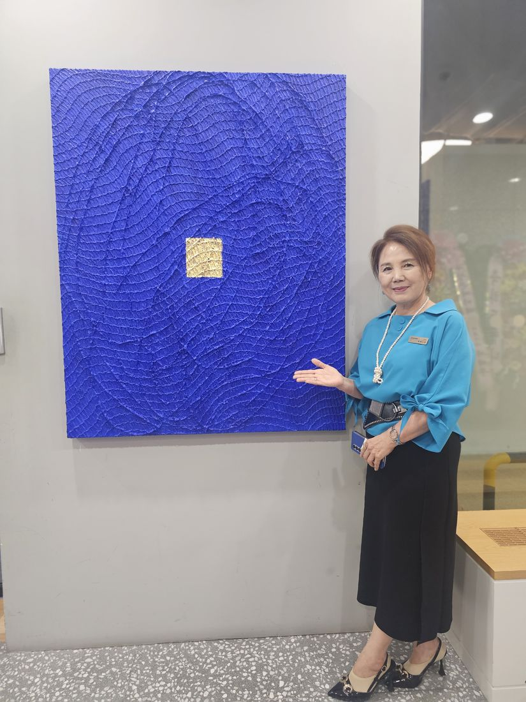

Artist
서울을 기반으로 활동하는 현대 미술가. 깊이 있는 색면과 반복적인 레이어, 금의 상징적 요소를 통해 인간 존재와 존엄을 탐구합니다.
한 층 한 층 쌓은 거친 질감의 중첩은 인간 삶의 부조리함에 대한 번민과 고통의 깊은 성찰을 이야기하며, 인간의 존엄성과 희망의 빛을 순금과 다이아몬드, 진주 가루로 간결하게 조형합니다.
BLUE OCEAN
바다 위, 바다 아래, 그리고 어제와 오늘. 시시각각 달라지는 바다의 소리와 빛깔을 인간 삶의 감정으로 다시 읽습니다.
DIGNITY
반복된 붓질로 쌓인 깊은 질감은 삶의 시련과 시간을, 그 안에서 빛나는 사각형은 인간의 고유한 존엄을 상징합니다.
주요 전시
- 2026제61회 베니스 비엔날레 · 탄자니아 국가관
- 2026The OH JIYOON : 尊嚴 · 하나은행 PLACE 1, 서울
- 2026DIGNITY 미디어월 · 신세계백화점 본점
- 2025해가 지지 않는 바다 · 예술의전당 한가람미술관
- 2024오지윤 개인전 · 로마
- 2024제60회 베니스 비엔날레 · 방글라데시 국가관
- 2024Kiaf SEOUL · 코엑스
- 2024Affordable Art Fair · 홍콩
수상
- 2021인도네시아 아체 국왕 문화훈장
- 2019위대한 한국인 대상 · 문화예술부문
Selected Works
작품
작품을 누르면 크게 보고 설명을 읽을 수 있습니다. 소장 문의는 작품 번호와 함께 남겨 주세요.
Now on View
The OH JIYOON : 尊嚴
숨결의 정수 — l'essence du souffle
- 기간
- 2026. 10. 2 — 10. 30
- 장소
- 하나은행 PLACE 1 · 서울 삼성동
- 작품
- 신작 50여 점
- 총괄
- 총괄디렉터 박에스더
오지윤은 수만 번의 붓질로 캔버스 위에 시간의 부조를 쌓는다. 한 번의 붓질은 명상이 되고, 그 반복은 수행이 된다.
겹겹이 쌓인 물감의 결은 인간 삶의 부조리와 번민을 품으며, 그 틈에 박힌 금은 희망이 된다. 그의 화면은 아무것도 설파하지 않는다. 다만 고요히 머물며, 보는 이의 마음을 움직일 뿐.


겨울 밤바다를 바라보며 가족과 함께 기도했던 기억에서 출발한 작품입니다. 지리산 참나무 숯가루와 다이아몬드 가루로 밤하늘의 은하수를 떠올리게 합니다.
전시 전경

About
아트셀라
아트셀라는 아트디렉터 박에스더가 이끄는 미술 에이전시입니다. 서른 해 캔버스 앞에 선 작가의 눈과, 여섯 해 전시를 이끈 감독의 손으로 작가의 곁에 섭니다.
화려한 자본 대신 안목과 해석으로. 작가가 오직 그림 앞에만 설 수 있도록 전시 기획과 공간 섭외, 해설과 기록, 후원 연결까지 함께합니다.
㈜VALERO · 오지윤 초대전 『尊嚴』 총괄디렉터
For Artists
작가 매니지먼트
- 작가 스토리 · 작품 해설 원고
- 포트폴리오 · 소개 자료 정리
- 기업 후원 · 지원사업 연결
- 전시 기획 · 공간 섭외
먼저 비용을 받지 않습니다.
For Companies
기업 · 기관 아트 컨설팅
- 로비 · 라운지 · VIP 공간 전시
- 공간에 맞는 작품 선정과 대여
- 임직원 · 고객 도슨트 강연
- 오프닝 · 문화 행사 연출
현장 방문 후 맞춤 제안서를 드립니다.
For Collectors
컬렉터 · 도슨트
- 프라이빗 도슨트 투어
- 작품 구입 상담 · 작가 소개
- 소장품 해설과 기록
- 모임 · 단체 미술 강의
처음 작품을 사는 분도 편하게 오세요.
Contact
작품 소장과 전시,
편하게 문의해 주세요.
보내기를 누르면 작성하신 내용이 담긴 메일이 박에스더 대표에게 연결됩니다.
